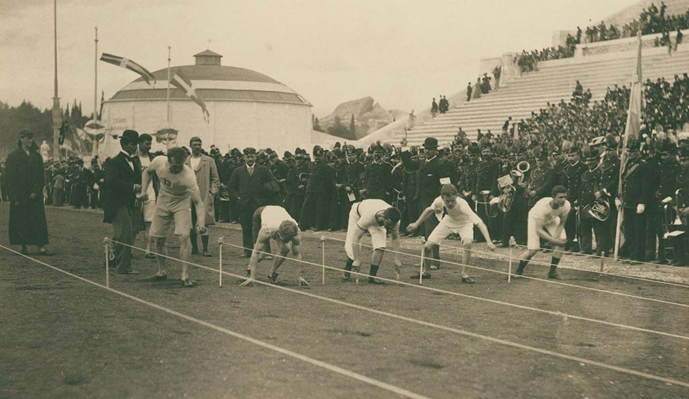
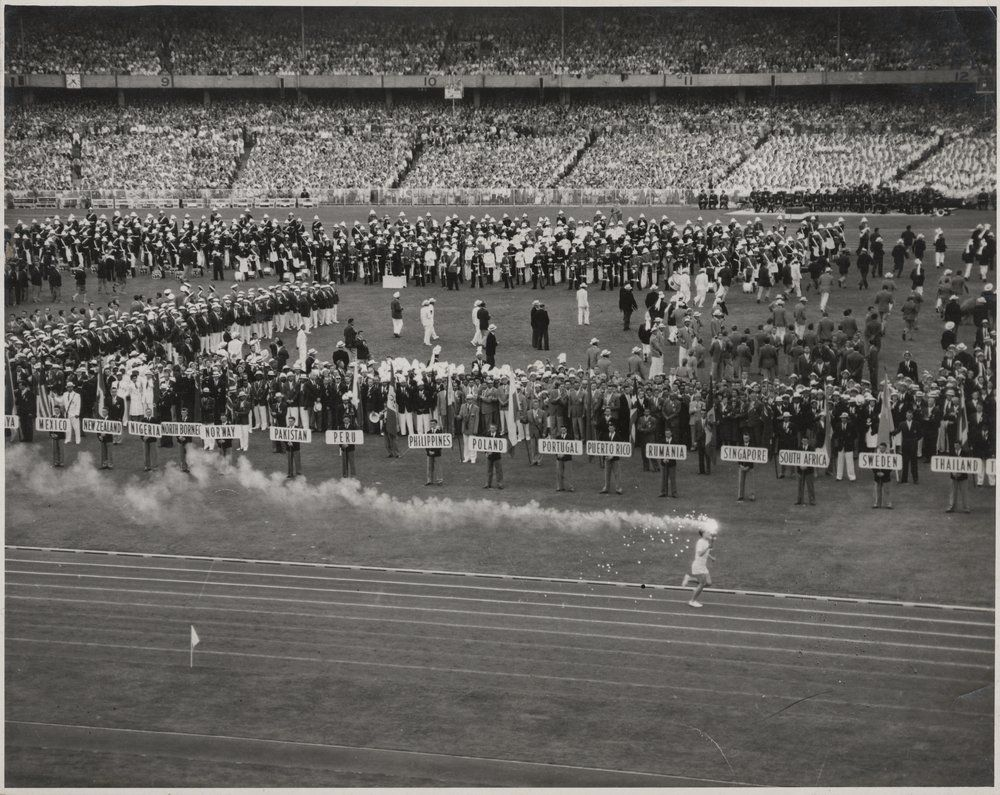

1894 – 1904
Скромното начало
Австралийското олимпийско участие е плод на дипломатическото умение на новозеландския администратор Ленърд Къф, който успява да договори представителство на Австралазия на първите заседания на Международния олимпийски комитет през 1894 г.
Когато Летните игри в Атина 1896 наближават, изглежда никой австралиец няма да може да участва. Но Едуин Флак — счетоводител и любител атлет от Мелбърн, работещ по онова време в Лондон — взема отпуск и се отправя към Гърция.
Печели злато на 800 м и 1500 м, бронз на тенис двойки и води маратона, преди да се оттегли от изтощение. Състезава се под флага на Лондонския атлетически клуб, но с екипа на родния си клуб по бягане в Мелбърн.

Едуин Флак — първият олимпийски шампион на Австралия
На Игрите в Париж 1900 Австралия е представена от трима спортисти. Фредерик Лейн завоюва първите австралийски медали в плуването — злато на 200 м свободен стил и бронз в препятствията. Стан Роули добавя три бронза в лека атлетика. Това са последните игри, на които Австралия се състезава под британския флаг.
1908 – 1912
Австралазийският отбор
На Игрите в Лондон 1908 и Стокхолм 1912 Австралия и Нова Зеландия се явяват под общия флаг на Австралазия. Дебютира и бъдещият председател на организационния комитет на Мелбърн — Франк Борепер, спечелил сребро и бронз в плуването.
Австралийският национален отбор по ръгби побеждава британците с 32–3 в единствения мач от турнира и взема единственото злато за Австралазия на тези игри.

Австралазийският щафетен отбор на 4×200 м свободен стил — Стокхолм 1912
На Игрите в Стокхолм 1912 всички медали са завоювани в плуването. Фани Дюрак и Мина Уайли стават първите жени в историята, спечелили олимпийски медали в плуването — съответно злато и сребро на 100 м свободен стил. Игрите от 1916 г. са отменени заради Първата световна война.
1920 – 1936
Самостоятелен отбор и нов комитет
Австралийският олимпийски съвет е официално учреден на 29 април 1920 г., след решение на МОК, което позволява на двете страни да участват поотделно. Летните игри в Антверпен тази година стават официалният дебют на независима Австралия.
Отборът от 13 атлети (само една жена) печели два сребърни и един бронзов медал, включително първото австралийско отличие в спортното ходене — сребро за Джордж Паркър.
Злато за плувеца Бой Чарлтън (1500 м), скачача Дик Ийв и Ник Уинтър в тройния скок. Франк Борепер добавя бронз — ставайки първият австралиец с медали от три различни Олимпиади.
1946 – 1956
Мелбърн — домакин на Игрите
Веднага след края на Втората световна война Олимпийският съвет на Виктория започва да лобира Мелбърн да приеме Летните игри от 1956 г. Делегация на AOF пътува до Лондон за Игрите от 1948 г., за да наблюдава организацията и да изгражда контакти в МОК.
На тези Лондонски игри Австралия изпраща рекордните за времето си 77 атлети и завоюва 13 медала, включително злато за Джон Уинтър (висок скок) и Мървин Ууд (гребане).
Мелбърн побеждава Буенос Айрес с един глас разлика и влиза в историята като първия град в Южното полукълбо, домакин на Олимпийски игри.

Церемония по откриването — Летни олимпийски игри, Мелбърн 1956
1973 – 1980
Криза, реформа и натиск за бойкот
От 1956 г. насам Австралия печели поне по пет златни медала на всяка Олимпиада. Затова резултатите от Монреал 1976 са истински шок: нула злато и едва пет медала общо. Само едно сребро — за отбора по хокей на трева — и три бронза. Австралия завършва на унизителното 32-ро място.
Разследването на правителството на Малкълм Фрейзър разкрива ключов проблем: докато светът е преминал към държавно финансиране на спортистите, Австралия все още разчита на остаряла аматьорска система, без инвестиции в спортна наука.
Провалът предизвиква широк обществен и медиен отзвук, включително протести пред правителствени сгради. В отговор са предприети системни реформи, довели до основаването на Австралийския институт по спорт — повратна точка в историята на австралийския олимпийски спорт.